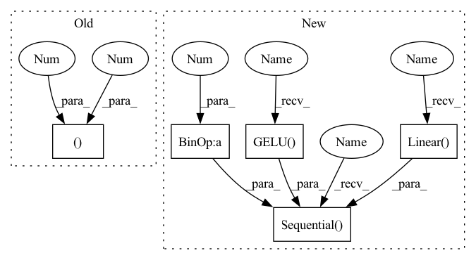

Pattern ID :14385

Before Change
def __init__(self, number_class_symbols, in_channels=3, rnn_size=128):
super().__init__()
self.maxpooling_22 = nn.MaxPool2d(2, 2)
self.maxpooling_21 = nn.MaxPool2d((2, 2), (2, 1), (0, 1))
self.layer1 = self._make_layer(in_channels, 64, 3, 1, 1)
self.layer2 = self._make_layer(64, 128, 3, 1, 1)
self.layer3 = self._make_layer(128, 256, 3, 1, 1)
After Change
self.avg_pool = nn.AdaptiveAvgPool2d(
(time_feature_count, time_feature_count))
self.bilstm = BiLSTM(time_feature_count, lstm_hidden, lstm_len)
self.classifier = nn.Sequential(
nn.Linear(lstm_hidden * 2, time_feature_count),
nn.GELU(),
nn.Dropout(0.1),
nn.Linear(time_feature_count, number_class_symbols)
)
def forward(self, x):
x = self.feature_extractor(x)
b, c, h, w = x.size()
In pattern: SUPERPATTERN
Frequency: 3
Non-data size: 5
Instances
Fragment ID: 47448820
Project Name: sberbank-ai/ocr-model
Commit Name: db55ee227e236d8da2dc2323804c42dd7f6b14b4
Time: 2021-09-28
Author: kalinin@sent.com
File Name: ocr/src/models.py
M Class Name: CRNN
N Class Name: CRNN
M Method Name: __init__(5)
N Method Name: __init__(4)
M Parent Class: nn.Module
N Parent Class: nn.Module
M File Name: ocr/src/models.py
N File Name: ocr/src/models.py
M Start Line: 23
M End Line: 32
N Start Line: 28
N End Line: 40
'>
Before Change
def __init__(self, number_class_symbols, in_channels=3, rnn_size=128):
super().__init__()
self.maxpooling_22 = nn.MaxPool2d(2, 2)
self.maxpooling_21 = nn.MaxPool2d((2, 2), (2, 1), (0, 1))
self.layer1 = self._make_layer(in_channels, 64, 3, 1, 1)
self.layer2 = self._make_layer(64, 128, 3, 1, 1)
self.layer3 = self._make_layer(128, 256, 3, 1, 1)
After Change
self.avg_pool = nn.AdaptiveAvgPool2d(
(time_feature_count, time_feature_count))
self.bilstm = BiLSTM(time_feature_count, lstm_hidden, lstm_len)
self.classifier = nn.Sequential(
nn.Linear(lstm_hidden * 2, time_feature_count),
nn.GELU(),
nn.Dropout(0.1),
nn.Linear(time_feature_count, number_class_symbols)
)
def forward(self, x):
x = self.feature_extractor(x)
b, c, h, w = x.size()
'>
Fragment ID: 47448823
Project Name: ai-forever/ocr-model
Commit Name: db55ee227e236d8da2dc2323804c42dd7f6b14b4
Time: 2021-09-28
Author: kalinin@sent.com
File Name: ocr/src/models.py
M Class Name: CRNN
N Class Name: CRNN
M Method Name: __init__(5)
N Method Name: __init__(4)
M Parent Class: nn.Module
N Parent Class: nn.Module
M File Name: ocr/src/models.py
N File Name: ocr/src/models.py
M Start Line: 23
M End Line: 32
N Start Line: 28
N End Line: 40
'>
Before Change
SqueezeExcitation(embed_dim, embed_dim // 4),
nn.Conv2d(embed_dim, embed_dim, 1)
)
self.layer_scale = nn.Parameter(torch.ones((embed_dim,1,1)) * layer_scale_init)
self.drop_path = StochasticDepth(drop_path, "row") if drop_path > 0 else nn.Identity()
def forward(self, x: torch.Tensor):
After Change
if norm_type == "ln":
// LayerNorm version. Primary format is (N, H, W, C)
// follow this approach https://github.com/pytorch/vision/blob/main/torchvision/models/convnext.py
self.layers = nn.Sequential(
nn.LayerNorm(embed_dim),
nn.Linear(embed_dim, embed_dim),
nn.GELU(),
Permute(0, 3, 1, 2), // (N, H, W, C) -> (N, C, H, W)
nn.Conv2d(embed_dim, embed_dim, 3, padding=1, groups=embed_dim), // dw-conv
nn.GELU(),
SqueezeExcitation(embed_dim, embed_dim // 4),
Permute(0, 2, 3, 1), // (N, C, H, W) -> (N, H, W, C)
nn.Linear(embed_dim, embed_dim)
)
self.layer_scale = nn.Parameter(torch.ones(embed_dim) * layer_scale_init)
else:
// BatchNorm version. Primary format is (N, C, H, W)
'>
Fragment ID: 47448830
Project Name: gau-nernst/vision-toolbox
Commit Name: 9c33936b15da329b7d51d981196aca20d5e00077
Time: 2022-03-04
Author: gau.nernst@yahoo.com.sg
File Name: vision_toolbox/backbones/patchconvnet.py
M Class Name: PatchConvBlock
N Class Name: PatchConvBlock
M Method Name: __init__(5)
N Method Name: __init__(4)
M Parent Class: nn.Module
N Parent Class: nn.Module
M File Name: vision_toolbox/backbones/patchconvnet.py
N File Name: vision_toolbox/backbones/patchconvnet.py
M Start Line: 77
M End Line: 89
N Start Line: 77
N End Line: 109